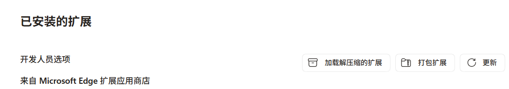
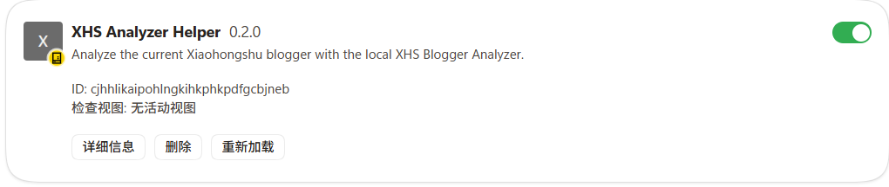
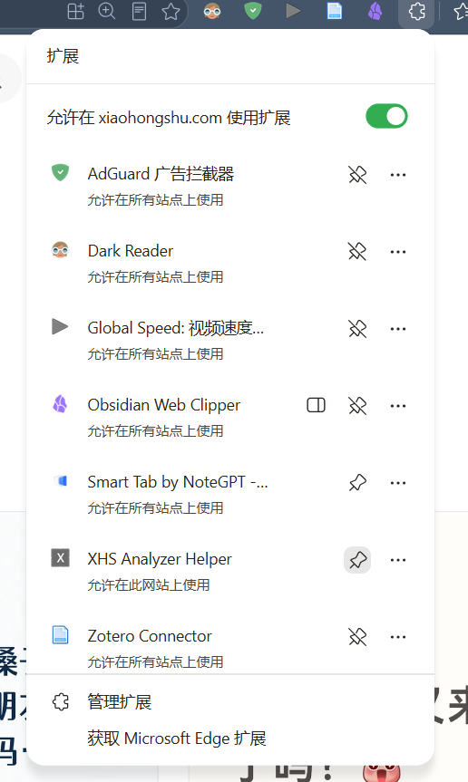
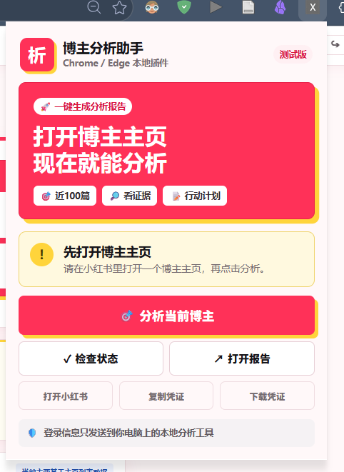
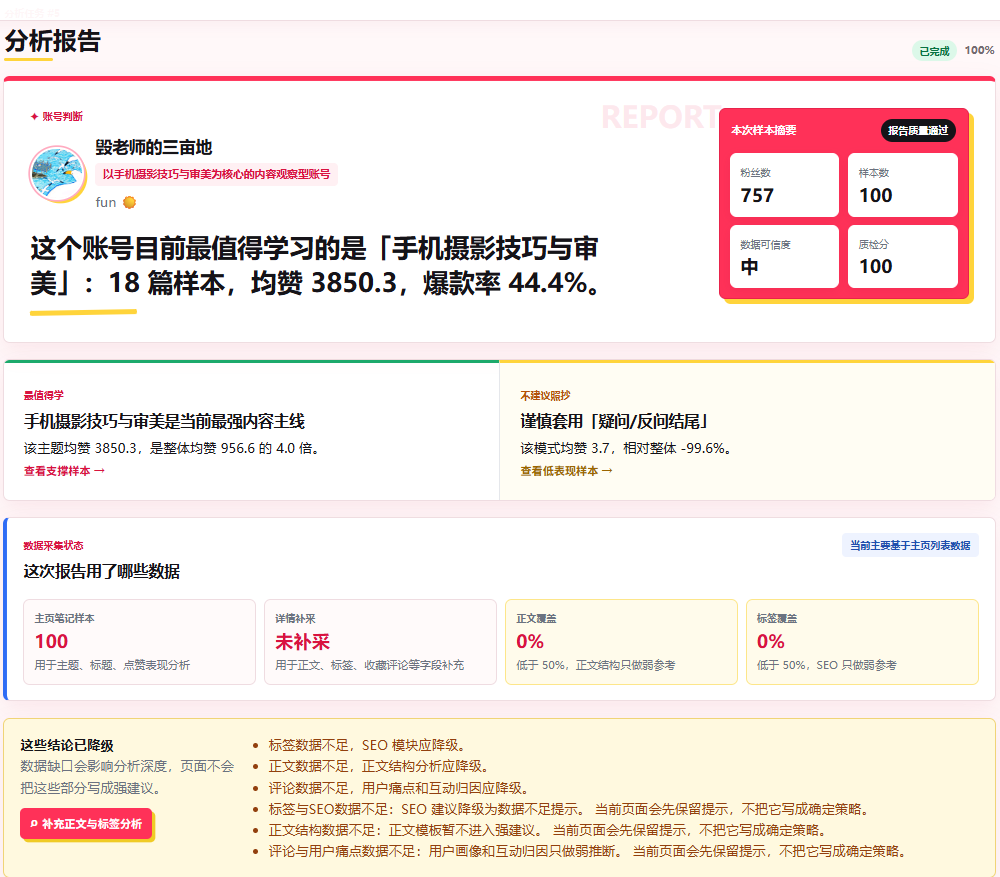
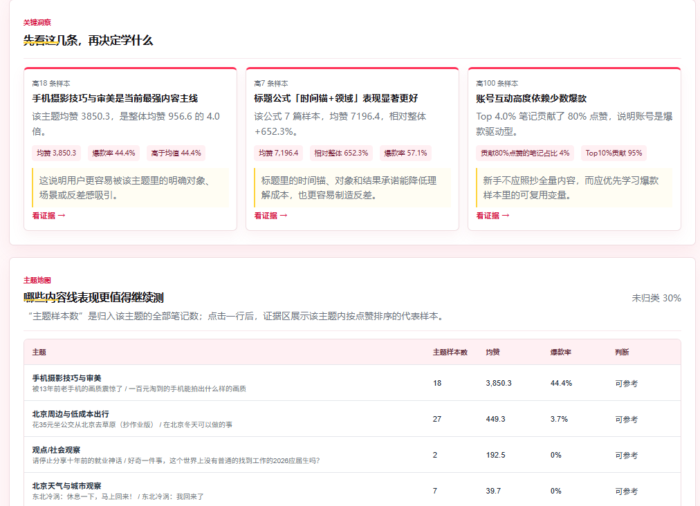
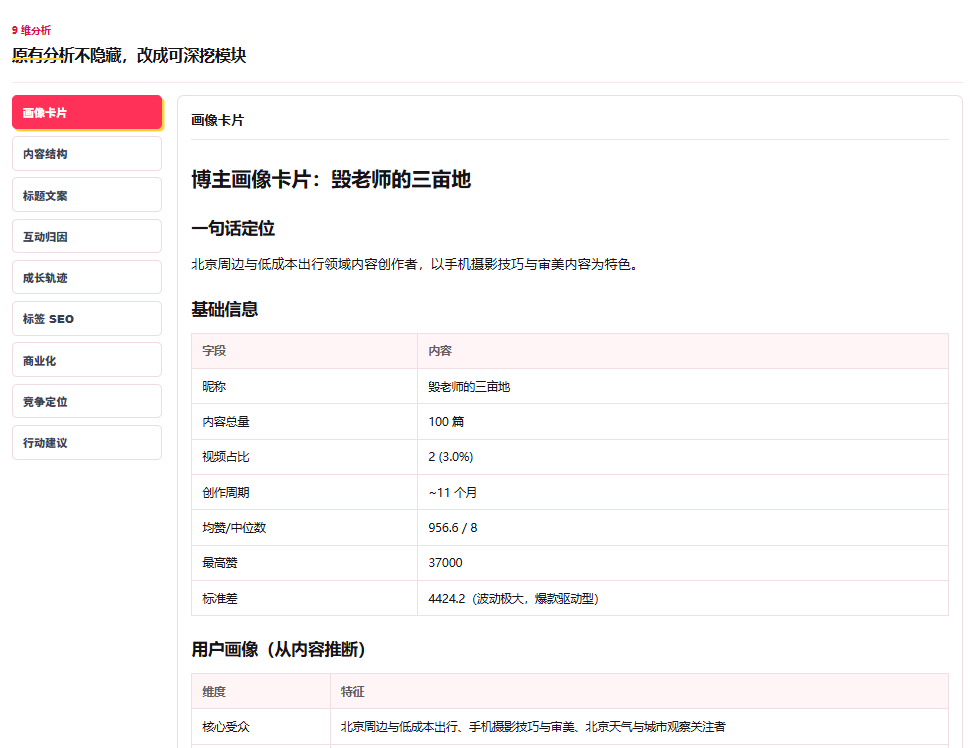

Windows 测试版
XHS 博主分析助手安装说明
这份说明写给完全不懂技术的用户。照着一步一步做，就可以安装并使用。
请在电脑上操作。手机可以看这份 PDF，但工具需要安装在 Windows 电脑上。
第 1 步从百度网盘下载 zip。
第 2 步解压，然后双击
XHS分析助手.exe。第 3 步安装浏览器插件，打开博主主页分析。
先确认你需要什么
- 一台 Windows 电脑。
- Chrome 浏览器或 Edge 浏览器。
- 已经登录的小红书账号。
新版测试包一般不需要你自己安装 Python 或 Node.js。
不要在手机上安装。不要只安装浏览器插件。必须先启动本地工具。
下载工具包
请下载这个文件：
XHS博主分析助手-Windows测试版.zip
百度网盘下载
链接：
https://pan.baidu.com/s/1d2U3q0QMVLYyEkCnOJRJHQ?pwd=qxc4
提取码：
qxc4
也可以复制这段内容后打开百度网盘手机 App：
链接: https://pan.baidu.com/s/1d2U3q0QMVLYyEkCnOJRJHQ?pwd=qxc4 提取码: qxc4
如果你是在手机上看到这份 PDF
- 先把文件保存到自己的百度网盘。
- 打开电脑。
- 在电脑上登录百度网盘。
- 把 zip 下载到电脑桌面。
解压 zip
- 在电脑上找到
XHS博主分析助手-Windows测试版.zip。 - 鼠标右键点击它。
- 选择“全部解压缩”或“解压到当前文件夹”。
- 等它生成一个新的文件夹。
- 打开这个新的文件夹。
打开后，你应该能看到这些东西：
XHS分析助手.exe 关闭本地工具.bat 使用说明.html README-先看我.txt browser-extension/ docs/
不要直接在压缩包里面双击文件。一定要先解压。
启动本地工具
- 双击
XHS分析助手.exe。 - 第一次启动可能会慢一点，请等一会儿。
- 如果弹出黑色窗口，不要关闭。
- 正常情况下，浏览器会自动打开
http://127.0.0.1:8000。
看到本地网页打开，就说明这一步成功了。
安装浏览器插件
Chrome 用户
- 打开 Chrome。
- 地址栏输入
chrome://extensions/。 - 打开右上角“开发者模式”。
- 点击“加载已解压的扩展程序”。
- 选择刚才解压出来的
browser-extension文件夹。
Edge 用户
- 打开 Edge。
- 地址栏输入
edge://extensions/。 - 打开“开发人员模式”。
- 点击“加载解压缩的扩展”。
- 选择刚才解压出来的
browser-extension文件夹。

看到“加载已解压的扩展程序”或“加载解压缩的扩展”，点它。

看到插件卡片，说明安装成功。

建议把插件固定到右上角，之后更好找。
开始分析一个博主
- 确认
XHS分析助手.exe正在运行。 - 在 Chrome 或 Edge 里登录小红书。
- 打开你想分析的博主主页。
- 点击浏览器右上角的插件图标。
- 点击“分析当前博主”。
- 等待报告自动打开。
博主主页通常长这样：
https://www.xiaohongshu.com/user/profile/用户ID

打开博主主页后，点击插件里的“分析当前博主”。
报告长什么样

报告首页会先告诉你：这个账号最值得学习什么。

继续往下看，可以看到主题地图和关键洞察。

如果想细看，还可以打开深度分析模块。
卡住了怎么办
插件提示“本地工具没启动”
回到工具文件夹，双击 XHS分析助手.exe，等网页打开后再点插件。
插件提示“先打开博主主页”
请先打开某个小红书博主主页，再点插件。
插件提示“还没有检测到登录”
请先在当前浏览器登录小红书，然后刷新博主主页。
Windows 提示未知发布者
当前是测试版，没有代码签名，所以 Windows 可能提示未知发布者。请只从作者提供的正式下载包获取文件。
隐私和使用边界
- 插件只把必要信息发送到你自己电脑上的
127.0.0.1。 - 不需要你手动复制 Cookie。
- 不需要你提供小红书密码。
- 不建议频繁批量分析大量账号。
- 报告只是公开主页样本观察，不代表平台官方数据。
反馈时请提供
- 电脑系统版本，例如 Windows 10 / Windows 11。
- 使用的浏览器，例如 Chrome / Edge。
- 卡在哪一步。
- 页面截图。
- 工具文件夹里的
logs文件夹。